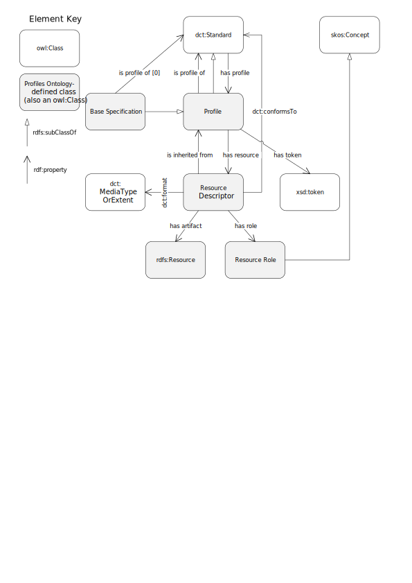

The Profiles Ontology is an RDF vocabulary to describe profiles of (one or more) standards for information resources. It describes the general pattern of narrowing the scope of a specification with additional, but consistent, constraints, and is particularly relevant to data exchange situations where conformance to such profiles is expected and carries additional context. The Profiles Ontology enables profile descriptions to specify the role of resources related to data exchange such as schemas, ontologies, rules about use of controlled vocabularies, validation tools, and guidelines. The ontology may however be used to describe the role of artifacts in any situation where constraints are made on a the usage of more general specifications.
The namespace for PROF terms is http://www.w3.org/ns/dx/prof/.
The PROF ontology, defined in OWL and encoded in RDF Turtle, is available at profilesont.ttl.
Overview of DXWG documents on profiles
This document is part of a set of documents on profiles, edited by the W3C Dataset Exchange Working Group (DXWG).
Some of the documents are general while some are technology-specific:
[[PROF-GUIDANCE]], the top-level general recommendations and guidance on profiling.
It gives an overview of all DXWG documents on profiles and is the recommended starting point
[PROF-ONT] (this document), an RDF vocabulary that describes profiles and related resources
[[PROF-CONNEG]], the specific guidance on how to negotiate for Internet resource content using profiles
[[PROF-IETF]], an IETFInternet-Draft defining HTTP Headers for HTTP content negotiation by profile
Introduction
This Profiles Ontology provides a structure to describe profiles of information standards. Its
development was triggered by the appearance of multiple profiles of the Dataset Catalog Vocabulary (DCAT)
[[VOCAB-DCAT-20140116]] and examples of profiles including the Dublin Core Application Profiles guidelines [[DCAP]] and various profiles of OpenGeospatial Consortium specifications.
The Profiles Ontology is an RDF vocabulary to describe the resources that define and implement a profile. A profile is defined as "A named set of constraints on one or more identified base specifications or other profiles, including the identification of any implementing subclasses of datatypes, semantic interpretations, vocabularies, options and parameters of those base specifications necessary to accomplish a particular function." These resources may be human-readable documents (PDFs, textual documents), vocabularies or ontologies (XSD, RDF), resources specific to validation tools (SHACL, ShEx, Schematron), or any other files or resources that support the profile. Each resource is defined as having a role that defines its function within the profile.
This ontology also provides for the description of relationships between such profiles and the standards to which they conform. A standard in this case can be a vocabulary or it can be another profile from which the described profile is a derivation, expansion, or selection. This ontology provides a standardized, machine readable formalism for describing the context of profiles. The basis of the ontology is a specialization of dct:Standard, allowing the use of the dct:conformsTo predicate to specify conformance to a profile.
A "profile" here is represented by the Profile class definition in the
Vocabulary Specification with the following definition: "A named set of constraints on one or more identified base specifications or other profiles, including the identification of any implementing subclasses of datatypes, semantic interpretations, vocabularies, options and parameters of those base specifications necessary to accomplish a particular function."
Profiles aim to increase interoperability within a community of users by introducing
certain constraints on the use of a more general standard such as a published vocabulary. Such constraints include restrictions on the cardinality of certain
properties, or a requirement to select values of a property from a specified controlled vocabulary. Profiles
have generally been specified through textually-oriented documents, and/or platform specific constraint languages.
A vocabulary of Resource Roles is provided alongside this ontology and that list is extensible:
For the purpose of compliance, the normative sections of this document are
Section 6Conceptual Model,
Section 7Vocabulary Specification &
Section 9Test Suite.
Notational Conventions
The key words may, must, must not, optional, shall,
shall not, should, should not, recommended, required,
in this document are to be interpreted as described in [[RFC2119]].
Namespaces
The namespace for PROF is http://www.w3.org/ns/dx/prof/.
However, it should be noted that PROF makes use of terms from other vocabularies, in particular Dublin Core [[!DCTERMS]].
PROF itself only defines a minimal set of classes and properties of its own.
A full set of namespaces and prefixes used in this document is shown in the table below.
Prefix
Namespace
dcat
http://www.w3.org/ns/dcat#
dct
http://purl.org/dc/terms/
owl
http://www.w3.org/2002/07/owl#
prof
http://www.w3.org/ns/dx/prof/
prov
http://www.w3.org/ns/prov#
role
http://www.w3.org/ns/dx/prof/role/
rdf
http://www.w3.org/1999/02/22-rdf-syntax-ns#
rdfs
http://www.w3.org/2000/01/rdf-schema#
skos
http://www.w3.org/2004/02/skos/core#
xsd
http://www.w3.org/2001/XMLSchema#
(others)
All other namespace prefixes are used in examples only.
In particular, IRIs starting with "http://example.com" represent some application-dependent IRI [[RFC3987]]
Motivation
Until this ontology, there was no formal W3C method for describing the objects (Internet resources) related to
profiles.
There are a multitude of ways to describe the components needed to define a profile and support validation of instances, such as:
human-readable documents stating requirements ( e.g. [[PDF]])
usage and guidance notes
machine readable constraint languages
(e.g. the abstract (Dublin Core's Description Set Profiles [[DCDSP]]) ot the more concrete (SHACL [[SHACL]] & ShEx
[[SHEX]]).
Describing only the components within a profile via documents or constraint languages does not indicate many things
either important or interesting to know about a profile such as:
its dependence on standards or other profiles
inheritance of profile information from the things being profiled, or
related profile resources
guidance documents in addition to formal constraints
equivalent constraints written in different constraint languages for different forms of resource, e.g.
SHACL for RDF and Schematron [[SCHEMATRON]] for XML.
With a mechanism to relate profiles to standards and other profiles, profile hierarchies can be established which
will:
assist with the reuse of existing profiles
one can profile another profile, adding a small set of additional constraints and declaring compatibility with all profiled standards.
reducing the total effort and information necessary to specify a profile
allow for machine interpretation of profiles and automated profile negotiation with fallback options
if a client requests a profile which a server cannot deliver, a server may be able to instead deliver a
more generic version of the requested resource, using a profile link to the thing it profiles
a client may be able to generate a request that already indicates acceptable fallback options for resources
when the primary requested profile is unavailable
The details of profile negotiation using this ontology, as suggested immediately above, and other methods,
are explained in detail in the related [[PROF-CONNEG]] document.
Related Work
Conceptual Model

OWL [[OWL2-OVERVIEW]] overview diagram of this ontology
The model takes the dct:Standard Class as a starting point and defines two specializations, a Base Specification (a Standard that does not profile anything) or a Profile (a Standard which
does). Base Specifications or Profiles can have Resource Descriptors associated with
them that define rules for implementation, provide guidance on how to implement, or some other role. Resource Descriptors must indicate the role they
play (to guide, to validate etc.), the formalism they adhere to (dct:format)
and any dct:Standard that they themselves conform to (dct:conformsTo).
A vocabulary of Resource Roles is provided alongside this ontology and that list is extensible.
The PROF vocabulary is available in RDF. Alongside the primary artifact, there is
a set of other RDF files that provide additional information, including:
alignments to other vocabularies, some of which are normative, and others which are for guidance only
additional axioms, which can be useful in some contexts
validating graphs using [[SHACL]]
These other artifacts are linked to throughout this document.
Dependencies
This vocabulary makes use of [[DCTERMS]] properties conformsTo & format in its
normative specification.
This may not be a useful class: documents of any specification can be regarded as a trivial profile, so applications only need to be concerned with Profile conformance. If used, a Base Specification may not have the property prof:isProfileOf.
A named set of constraints on one or more identified base specifications or other profiles, including the
identification of any implementing subclasses of datatypes, semantic interpretations, vocabularies, options
and parameters of those base specifications necessary to accomplish a particular function.
This definition includes what are often called "application profiles", "metadata application profiles", or
"metadata profiles".
The semantics of the rdfs:Range means that any resource treated as a base specification can be regarded as a Profile (i.e. may be any specification with an empty set of additional constraints)
A means to list all the Profiles/Standards within a transitive profile hierarchy
The property prof:isTransitiveProfileOf defined here performs a role
similar to that of the property skos:broaderTransitive
defined in [[SKOS-REFERENCE]]. That property "...allows communities of practice to exploit transitive
interpretations of hierarchical networks..." while freeing the simpler hierarchy property of
skos:broader from having to enforce
transitivity which would prevent broader but non-transitive relationships.
Figure 4.5.2 from [[SKOS-PRIMER]], reproduced below, illustrates the general principle of use of
skos:broaderTransitive.
Inferring a transitive hierarchy from asserted skos:broader statements. Dotted arrows represent statements
inferred from the SKOS data model. Solid arrows represent asserted statements. Reproduction of Figure 4.5.2
in [[SKOS-PRIMER]]
This ontology defines prof:isTransitiveProfileOf to allow for the
transitive interpretations of hierarchies of Profiles (of other Profiles and Standards) while freeing the
simpler property, prof:isProfileOf from having to enforce transitivity.
While this ontology provides this prof:isProfileOf & prof:isTransitiveProfileOf
pair of properties, it does not specify how a particular implementation of a Profile that is related to another
Profile or Standard by prof:isTransitiveProfileOf should implement specific inferences.
Inference based on prof:isTransitiveProfileOf will be more complex than inference based on
skos:broaderTransitive due to Profiles being complex objects relative to SKOS Concepts.
This property is to be used to indicate a token that identifies this Profile which should be used when the Profile's URI cannot be used. For potential use in content negotiation
A resource that defines an aspect - a particular part or feature - of a Profile
Usage note:
Used to indicate the formalism (via dct:format) and any adherence to a dct:Standard (via dct:conformsTo) to allow for machine mediation as well as its purpose via relation to a ResourceRole (via hasRole)
This section contains a few modelled examples of existing profiles to demonstrate aspects of this ontology. While
efforts have been made to ensure they are accurate at the time of this document's publication, they are not to be
considered authoritative; their purpose is only to illustrate this ontology's use.
DCAT-AP
This example showcases this ontology's description of parts of a profile.
DCAT-AP is the widely used European Application Profile of DCAT. DCAT-AP is described in document form
(PDF & DOCX) and a constraints document for instance validation is available, formulated using the W3C's Shapes
Constraints Language constraints language [[SHACL]].
The figure below described DCA-AP graphically, using elements from this ontology.
DCAT-AP, a profile of DCAT, has itself been profiled for various European countries, such as Belgium who has
issued DCAT-BE. Additionally, there are several domain profiles of DCAT-AP, such as
GeoDCAT-AP - for describing geospatial datasets,
dataset series and services - and StatDCAT-AP
for enhancing interoperability between descriptions of statistical datasets. further to this, there is even an
Italian profile of GeoDCAT, DCAT-AP-IT.
This profile hierarchy is represented graphically in the figure above and in RDF (turtle) below.
<http://www.w3.org/ns/dcat>
a prof:BaseSpecification ;
<https://joinup.ec.europa.eu/release/dcat-ap-v11>
a prof:Profile ;
rdfs:label "DCAT-AP" ;
prof:isProfileOf <http://www.w3.org/ns/dcat> ;
<http://dcat.be>
a prof:Profile ;
rdfs:label "DCAT-BE" ;
prof:isProfileOf <https://joinup.ec.europa.eu/release/dcat-ap-v11> ;
<https://joinup.ec.europa.eu/release/geodcat-ap-v10>
a prof:Profile ;
rdfs:label "GeoDCAT-AP" ;
prof:isProfileOf <https://joinup.ec.europa.eu/release/dcat-ap-v11> ;
<https://joinup.ec.europa.eu/solution/statdcat-application-profile-data-portals-europ>
a prof:Profile ;
rdfs:label "StatDCAT-AP" ;
prof:isProfileOf <https://joinup.ec.europa.eu/release/dcat-ap-v11> ;
<https://joinup.ec.europa.eu/news/geodcat-apit1>
a prof:Profile ;
rdfs:label "GeoDCAT-AP-IT" ;
prof:isProfileOf <https://joinup.ec.europa.eu/release/geodcat-ap-v10> ;
Since there are no restrictions on either the property prof:isProfileOf or the class definition of
prof:Profile that prevent them from being used to represent polyhierarchies, Belgium could release a
profile of [[StatDCAT-AP]] (e.g., StatDCAT-BE), that would be both a profile of DCAT-BE and [[StatDCAT-AP]]. This
imagined profile, '?' in the figure above, would not be a profile of GeoDCAT-AP.
Test Suite
A software suite is made available to test implementations of this ontology for compliance. This suite comprises of
[[SHACL]] RDF graph validation templates and instructions for the application of those templates to implementations.
Implementations
Implementation conformance reports for this ontology are given in:
Alignment of PROF classes with DCAT 1.1 [[VOCAB-DCAT-2-20180508]] classes. PROF classes are indicated with their rdfs:label text and no namespace prefix.Alignment of PROF classes with DCAT 1.1 [[VOCAB-DCAT-2-20180508]] properties. PROF properties are indicated with their rdfs:label text and no namespace prefix.
The following table summarieses the mappings shown graphically in Fig. 2 & 3.
PROF element
Mapping property
DCAT element
Notes
prof:hasResource
rdfs:subPropertyOf
dcat:distribution
dct:conformsTo
-
-
Used similarly
dct:format
-
-
Used similarly
prof:hasRole
rdfs:subClassOf
dcat:Distribution
prof:Profile
rdfs:subClassOf
dcat:Resource
Generic association
Alignment with ADMS
Alignment with VOAF
Alignment with OGC/ISO Modular specification model
Security and Privacy
Appendices
Requirements
This section lists, and then addresses, individual requirements that the Dataset Exchange Working Group
considered important for content negotiation by profile.
Responses to individual requirement Issues listed here are, at the time of the First Public Working Draft of
this document, for demonstration only; to indicate the logic of answers to individual requirements.
These requirement responses may not survive in their current form in later drafts of this document nor may
individual listings of requirements; they may be subsumed into the flowing txt of the document.
RESPONSE FOR 65
RESPONSE FOR 72
RESPONSE FOR 204
RESPONSE FOR 205
This is handled by having URIs for profiles resolve to HTML landing pages and RDF descriptions of the profile
created according to this ontology which then lenk to Resource Descriptors and other Profiles.
RESPONSE FOR 207
This is addressed by a Profile using this ontology to link to other Profiles from which it derives.
RESPONSE FOR 208
This is addressed by Profiles using Resource Descriptors from this ontology which then implement constraint
languages with various Roles such as "Full Constraints".
RESPONSE FOR 209
RESPONSE FOR 210
This is addressed by a Profile implementing a constraint language via a Resource Descriptor and selecting an
appropriate Resource Role for it.
RESPONSE FOR 211
RESPONSE FOR 212
RESPONSE FOR 213
RESPONSE FOR 214
RESPONSE FOR 215
Profiles described using this ontology may indicate that they are a profileOf another Profile.
RESPONSE FOR 216
RESPONSE FOR 217
RESPONSE FOR 222
RESPONSE FOR 255
RESPONSE FOR 264
RESPONSE FOR 268
RESPONSE FOR 272
RESPONSE FOR 279
Using this ontology, a Profile may indicate a Resource Descriptor instance by way of the
resource property. That Resource Descriptor may be a schema that conformsTo a
constraints language, such as SHACL etc.
RESPONSE FOR 280
RESPONSE FOR 284
Using this ontology, all Profile instances are RDF Resources with their own URIs.
Additionally, the token property is given for use with a Profile to be used to identify it
where use of a full URI is not possible, such as within HTTP Query String Arguments.
RESPONSE FOR 286
Following relationships from a profile defined using this ontology, a person or machine may discover either
Resource Descriptor resources describing any sort of document relevant to the profile or other
Profiles.
RESPONSE FOR 287
RESPONSE FOR 288
Graph navigation of profiles' information described using this ontology is supported by its RDF mechanics.
An instance of a resource claiming adherence to an instance of a Profile might indicate its adherence
by using the dct:conformsTo property.
Additional Issues
This section will be removed in a later version of this document.
Additional Issues related to this document and not yet placed within it are listed at the: